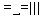

ANDO纯粹依靠强大的计算压迫对手犯错，曹冬完全严防死守找机会，小天的所谓设计就是几步VCT套几步VCT，最多来个所谓的补杀(也补不了几步）。朱建峰思路和小天差不多，都是依靠强大的计算找机会型的棋手。其他的人更不用说了，都是混的。。
什么叫设计？根本不是逼迫对手去攻或者逼迫对手去防，更不是依靠强大的计算来找漏洞。设计指的是模拟对手的习惯，让对手按照自己的意图去落子，这不是简单的诱攻或者诱防，需要的是局面心理暗示加模拟对手思维。目前我所看到懂这个的或者无意识走出来过的只有中村白痴棋情和我。其他人一个都没看到。棋情在这方面的思路是很强的。但是他的计算一般，所以只能用软件来操纵这种思维。我和白痴的计算比不上上面提到的那些人，但是勉强够用。大概只有中村年轻的时候既有这种思维又有足够强大的计算了。所以ANDO虽然赢了中村，但是那是中村年纪大了计算已经无法控制住这种思维才造成的。
一个不懂设计的棋手最高境界也就是练成机器人一样的全部最强防或者最强攻了，但是根本演绎不出五子棋真正的内涵，也根本没有自己的思想。
［ ^版徒 于 2011-9-26 3:06:59 时花20金币送鲜花一朵］
［ 小丸.net 于 2011-9-26 3:17:02 时花20金币送鲜花一朵］
［ 潇洒 于 2011-9-26 9:34:41 时花20金币送鲜花一朵］
［ 厦门小天 于 2011-9-26 20:45:07 时花20金币送鲜花一朵］
［ 雅匪 于 2011-9-27 23:59:47 时花20金币送鲜花一朵］
［ 雅匪 于 2011-9-27 23:59:53 时花20金币送鲜花一朵］
［ 雅匪 于 2011-9-27 23:59:58 时花20金币送鲜花一朵］
［ 雅匪 于 2011-9-28 0:00:06 时花20金币送鲜花一朵］
［ 雅匪 于 2011-9-28 0:00:23 时花20金币送鲜花一朵］
［ 小小亦默 于 2011-10-20 18:00:38 时花20金币送鲜花一朵］
［ 小小亦默 于 2011-10-20 18:00:43 时花20金币送鲜花一朵］
［ 赫尔克里同学于 2014-4-28 13:06:38 时花20金币送鲜花一朵］

我的计算很垃圾。。。。。
一般一般世界第三
小天比棋情计算好，我是从斗地主和升级上看出来的
引用：没有如果
原文由 游戏人间 发表于 2011-9-26 3:17:46 :
估计如果五子棋将来达到围棋的程度的话，也就35岁以前的中村能达到业余初段。其他人根本连业余段位也进不去。
 大鱼LS，这种思路所有人都潜在有的啊，我觉得，只是层次不一样而已
大鱼LS，这种思路所有人都潜在有的啊，我觉得，只是层次不一样而已06年 完全理智的棋才是最强的（有攻就攻，把对手暴力到死）
08年 柔和一点（攻得收敛一点，游刃有余）
11年 忽然发现懂得设计的棋手世界上就没几个（各种诡异防守，引诱对手自杀）
……
这三篇文章充分反映了大鱼从一个激情四射的汉子转变为一个善于算计的猥琐大叔的心路历程
坐等2013年：完美的防御才是取胜之道，在这方面我在国内最佩服的棋手是曹冬……导演，剧本就是这样的吧。
［此帖子已被 屏蔽 在 2011-9-26 8:41:49 编辑过］
［ 潇洒 于 2011-9-26 9:34:50 时花20金币送鲜花一朵］
［ 小丸.net 于 2011-9-26 12:13:43 时花20金币送鲜花一朵］
［ 掌棋如烟 于 2011-9-26 13:06:49 时花20金币送鲜花一朵］
［ wuxiao 于 2011-9-26 14:57:12 时花20金币送鲜花一朵］
［ 第五象限 于 2011-9-26 15:58:38 时花20金币送鲜花一朵］
［ 也也 于 2011-9-26 16:03:00 时花20金币送鲜花一朵］
［ 一尘 于 2011-9-27 0:26:38 时花20金币送鲜花一朵］
［ aabb 于 2011-9-27 14:32:55 时花20金币送鲜花一朵］
［ 海湾浪琴 于 2011-9-27 21:55:13 时花20金币送鲜花一朵］
［ 雅匪 于 2011-9-28 0:00:44 时花20金币送鲜花一朵］
［ 白河愁 于 2011-9-30 18:26:55 时花20金币送鲜花一朵］
［ 灯塔连珠 于 2011-9-30 19:21:28 时花20金币送鲜花一朵］
［ 一期一会同学于 2013-9-27 18:34:05 时花20金币送鲜花一朵］
［ 小丸.net 于 2011-9-26 12:13:58 时奖励此帖[金币加 100 威望加1］
 比较抽象的概念
比较抽象的概念
难道只能意会，不能言传
全世界强的人没几个 我一个，我某个朋友，还有我儿子。
［ 棋情 于 2011-10-1 15:40:38 时惩罚此帖，发帖者[金币减100 威望减1］
［此帖子已被 没事摆石子玩 在 2011-9-26 13:07:29 编辑过］
［ 庞德同学于 2013-11-7 19:52:56 时花20金币送鲜花一朵］
［ 布武 于 2011-9-26 17:46:49 时花20金币送鲜花一朵］
［ 唐照京 于 2013-1-31 16:38:04 时花20金币送鲜花一朵］
不知道大鱼所说的设计是什么一个概念，可以的话举例一下中村年轻时设计的例子，以及大鱼对他的棋的理解，期待
赶快让冬瓜也去学设计去 这样下次再看到大鱼对冬瓜的碰撞实际上就是冬瓜对大鱼了
引用：你是说中村属于超自然范畴？ 生老病死身体退化谁不会
原文由 掌棋如烟 发表于 2011-9-26 16:49:50 :
你就这么肯定中村属于常识范畴里的？我是不知道哈
愚见，设计是为了让一种运动或活动发展成为一门艺术，自然就是追求的最高境界，，，，，好比一堆的各界名星分组对抗，对于职业范围内的技术，规则他们可以做到了如直掌。但取胜方之所以取胜，原因绝非技术，因为他们都名星，因为他们实力相当，，，，，，，而更重要的是战略，战术的设计及思维运用，当然也有相当的运气成分在里面，谁都知道运气不可能是万事发展的主要原因。。。。。
所以很认同大鱼把五子棋理解为设计美之说。。。至于他提到的人或未提到的人，我无法，无资质去评说、判断和归类，至于其因为提到或未提到的人而受无畏的指责，我无心，无权干涉和辩驳。
但绝对同意该文的本质观点，任何东西从起盟，到短兵相接，哪怕“强攻强守”，那也只是一个发展阶段,当发展到一定阶段后，自然就会有大部人练就文中提到的机器人。强强对抗不可能永远提和。自然就需要去设计，追求的自然也不再是如何成为铜皮铁骨了，而是向艺术化的转变。追求的也是一种“美”的价值观~~~！完全符合人类社会的发展规律。。。。。（教练这个职业就是为设计而生的）
（附记：不要把注意力集中到文中提到的人名当中去争辩，或许出现了你，或许没有出现你，这并不重要，因为这也只是大鱼的个人观点，不苟同正常）
［此帖子已被 ^版徒 在 2011-9-26 18:37:00 编辑过］
俺是 打酱油的。。 爆料， 此贴是 大鱼 起夜之后 一时 心血来潮 写的。

［此帖子已被 布武 在 2011-9-26 18:48:53 编辑过］
道长和牛牛亮了
我想这就是大鱼的魅力所在，看起来说的很嚣张，其实确实很嚣张。
能如此大胆评价当今棋坛当红炸子鸡们，其所在的中国五子棋界的地位如同围棋界的聂卫平。
这就是超顶尖棋手所应该有的性格。
［ 厦门小天 于 2011-9-26 21:05:00 时花20金币送鲜花一朵］
［ 掌棋如烟 于 2011-9-26 21:29:08 时花20金币送鲜花一朵］
［ 雅匪 于 2011-9-28 0:05:23 时花20金币送鲜花一朵］
引用：安度 曹冬论战绩论资历 哪样都能把大鱼爆出屎来。 还什么五子棋界聂卫平 。 过于嚣张自负 不尊重棋手不尊重前辈差不多
原文由 踵酃 发表于 2011-9-26 21:03:16 :
能如此大胆评价当今棋坛当红炸子鸡们，其所在的中国五子棋界的地位如同围棋界的聂卫平。
这就是超顶尖棋手所应该有的性格。
［ 厦门小天 于 2011-9-26 21:05:00 时花20金币送鲜花一朵］
［ 灯塔连珠 于 2011-10-19 14:37:41 时花20金币送鲜花一朵］
［ 兔子哥哥 于 2012-4-28 23:26:29 时花20金币送鲜花一朵］
引用：
原文由 布武 发表于 2011-9-26 17:45:58 :引用：你是说中村属于超自然范畴？ 生老病死身体退化谁不会
原文由 掌棋如烟 发表于 2011-9-26 16:49:50 :
你就这么肯定中村属于常识范畴里的？我是不知道哈
我已经说了我不知道了，我不确定了，我不太了解人类过了40岁就计算力一定不在颠峰了这个常识，我更没有提及超自然，也没有提到谁不会生老病死身体退化
我只是对中村在不在你说的“常识”范围里面化了一个问号，不懂就问是为美德，从你的回复里我没有推出肯定或者否定的答案。
别的不多说，你就直接告诉我，你认为是不是40岁的中村一定不如30岁的中村，就得了，别扯别的。
［ 魔铃 于 2011-9-26 23:13:04 时花20金币送鲜花一朵］
引用：我有说不能发表观点吗 我最多说不是五子棋届聂卫平 而是五子棋届实战派刀魂
原文由 厦门小天 发表于 2011-9-26 21:21:46 :
就事论事而已，怎么又回到资历论？没资历就没资格发表观点了？就算真论资历，也应该曹冬ANDO他们来发言吧？
［ 棋情 于 2011-10-1 12:28:14 时惩罚此帖，发帖者[金币减100 威望减1］
［ 棋情 于 2011-10-1 12:28:41 时惩罚此帖，发帖者[金币减100 威望减1］
小天还来回帖来了。。我都懒得回这个人啊。呵呵
顺便再对文中提到的这些人做个总结。曹冬就是防守到极致的防守型机器人，或者谁提出一局曹冬下黑棋的高水平对局来？
小天就是把计算发挥到极致的机器人。ANDO就是小天加强版，不过研究上不如小天。再比如朱建峰风格和小天也类似。。
现在新出来的棋手随便点评几个啊，比如黄金贤，越下越像机器人了。。。
引用：你能提出一局你下得好的棋出来吗
原文由 游戏人间 发表于 2011-9-26 21:49:57 :小天还来回帖来了。。我都懒得回这个人啊。呵呵
顺便再对文中提到的这些人做个总结。曹冬就是防守到极致的防守型机器人，或者谁提出一局曹冬下黑棋的高水平对局来？
小天就是把计算发挥到极致的机器人。ANDO就是小天加强版，不过研究上不如小天。再比如朱建峰风格和小天也类似。。
现在新出来的棋手随便点评几个啊，比如黄金贤，越下越像机器人了。。。
引用：
原文由 屏蔽 发表于 2011-9-26 8:41:19 :06年 完全理智的棋才是最强的（有攻就攻，把对手暴力到死）
08年 柔和一点（攻得收敛一点，游刃有余）
11年 忽然发现懂得设计的棋手世界上就没几个（各种诡异防守，引诱对手自杀）
……
这三篇文章充分反映了大鱼从一个激情四射的汉子转变为一个善于算计的猥琐大叔的心路历程
坐等2013年：完美的防御才是取胜之道，在这方面我在国内最佩服的棋手是曹冬……导演，剧本就是这样的吧。
［此帖子已被 屏蔽 在 2011-9-26 8:41:49 编辑过］
［ 潇洒 于 2011-9-26 9:34:50 时花20金币送鲜花一朵］
［ 小丸.net 于 2011-9-26 12:13:43 时花20金币送鲜花一朵］
［ 掌棋如烟 于 2011-9-26 13:06:49 时花20金币送鲜花一朵］
［ wuxiao 于 2011-9-26 14:57:12 时花20金币送鲜花一朵］
［ 第五象限 于 2011-9-26 15:58:38 时花20金币送鲜花一朵］
［ 也也 于 2011-9-26 16:03:00 时花20金币送鲜花一朵］
能预见到这一点,证明你将从一个棋道的跟随者向引领者转变。恭喜恭喜
［ 灯塔连珠 于 2011-10-19 14:39:26 时花50金币砸了你一个臭鸡蛋］
引用：
原文由 游戏人间 发表于 2011-9-26 22:09:04 :
我可以提啊。问题你是哪位呢？我现在下指导棋是500元1小时，请问你有什么资格让我对你进行指导呢？呵呵，让我给你摆变化是需要代价的，我不会提供给别人免费的午餐。
何止我，对你来说全世界都没几个人有资格吧 。我有叫你下指导棋吗，500块想疯了吧说起曹冬的棋，容易让人想起的是准确的计算，稳固的防御，各种捡漏，各种拍钟；而提起大鱼的棋，则是各种诡异的开局或变招，各种铤而走险，各种死里逃生。
我不敢说什么样的棋才是王道，我只是认为曹冬的棋稳健容易出成绩；大鱼的棋更刺激，更有味道，更丰富多彩。
存在即合理，我认识风格习惯并非一时一日之功，而是经过长期的定向选择逐渐形成。
棋情神级的设计源于网战，要战胜人脑+软件就客观需要更深更透彻的设计。
大鱼棋的设计给我感觉像斗地主的设计――够用就行。
PS你们这些喜欢设计的貌似都是天生喜欢寻刺激，不在乎输赢的主。
而我天然就不喜欢主动找刺激。相比之下，自己的体能问题多年来一直没能解决，导致实战越来越不愿意认真算，怕把脑子算不清醒了，慢慢成了关键时刻才好好算一下的机会主义者。
黄金贤给我的感觉他能在进攻的过程中享受乐趣。
［ ^版徒 于 2011-9-26 22:39:07 时花20金币送鲜花一朵］
我估计，LZ当时要在文中打个括号，把古往今来摸过五子棋的人名字都填进去，估计不会有如此壮观的非议
楼上的你不懂我就是觉得太无聊了。所以发吵架帖的。。大鱼意思是你批着马甲算什么，亮身份说话有没问题？
他要是敢亮身份我就自插双目，扶墙而出
［ 路痴 于 2011-9-27 9:30:51 时花20金币送鲜花一朵］
大鱼你这个黄牛党搞到回程卧铺没...有本事再搞6张回程软卧噻
［ 高飞 于 2011-9-28 11:32:14 时花20金币送鲜花一朵］
［ 海湾浪琴 于 2011-9-27 22:05:50 时花20金币送鲜花一朵］
棋看多了之后，的确容易产生幻觉。
思维定势，有利有弊。
［此帖子已被 江南新绿 在 2011-9-27 21:25:42 编辑过］
［ 掌棋如烟 于 2011-9-28 20:32:04 时花20金币送鲜花一朵］
引用：
原文由 雨一直下 发表于 2011-9-28 19:44:16 :
俺发现如烟MM逻辑学得不错
其实我只是一个一般智商水平下的逻辑，无奈世事总怕比较啊，你懂的
大一的逻辑学考试我完全抄的左右前后坐的（我一点也不会，逃课9成之多），我对比了一下他们各自的答案，最后总结出一个全班最高分
［ 雨一直下 于 2011-9-29 15:58:37 时花20金币送鲜花一朵］
［ 也也 于 2011-10-2 9:02:52 时花20金币送鲜花一朵］
君子坦荡荡，小人长戚戚。
大鱼可能已经走火入魔了，大家散了吧。
五子棋有这么多棋谱要研究，还要去研究棋手，太累了；
请扪心自问一下，大家现在还能从五子棋中得到乐趣吗？
楼上，乍一看去，古俗开篇，思维脱俗~！
自己花时间反思一下你的话，估计你自己都会笑~！特别是最后两句~！
按你的逻辑，以后的职业比赛，组织者先来个问卷调查，把那些没碰过棋的，没研究过棋的，甚至没听过五子棋的人，随机拉一百个出来比赛，开赛前一天培训规则和比赛章程，然后一伙零起步的“棋手”开始硬砍。。。你觉得很有乐趣？？
什么事情不去研究，哪来兴趣？研究是发展的过程，在某个阶段研究透了，是为了到达更深一个阶段。你去问问，哦，根本不用问，你想想这些职业棋手，哪个赛前赛后不去准备下一个对局，同时也研究下一个对手，他善于什么局，他有什么特点，自己该研究什么局面和方法应对。。。
按你这么讲，美苏半世纪前就登月进入太空，半世纪后的今天中国还研究什么“天宫号”。你该致电***，全文四个字“豪无乐趣”！
尽可能不要发表一些有违事物发展规律的观点，这样会影响下一代新生力量~！当然话又说回来，言论自由，你也是，我也是~！
［此帖子已被 ^版徒 在 2011-10-2 15:14:25 编辑过］
［ 掌棋宣传员 于 2011-10-2 18:53:27 时花20金币送鲜花一朵］
很久没有发言了，居然一发言就有人顶，先说一声谢谢。
我上面说的比较隐晦，也不想多解释什么。
我只想说：五子棋的比赛也好，研究也罢，最终都是在领悟棋理；
伴随着中国乃至世界五子棋的发展，隐遁的知名的、不知名的棋手远远超过了目前尚在活动的。乐趣也是大部分五子棋爱好者的精神支柱；我不知道我说了那些有违事物发展规律的观点。至少我写的东西你没有看明白。
壁立千仞，无欲则刚；海纳百川，有容乃大。世界上有几十亿人口，一个个去设计，不用再图什么世界冠军的虚名，中华人民共和国的国家主席、国务院总理都非你莫属。。。不过，还希望你的记忆里有袁世凯这个人，还记得他当皇帝后是怎样的结局。
［ 掌棋宣传员 于 2011-10-2 19:35:11 时花20金币送鲜花一朵］
引用：
原文由 没事摆石子玩 发表于 2011-10-2 19:08:28 :
真搞不懂总有一些人一边说着言论自由一边压制不同意见。大鱼说的就是他一家之言，大家姑妄听之。同意你赞赏，不同意咱们和平讨论问题。别总拿发展 进步 符合客观规律说事 你就那么肯定大鱼说的代表五子棋的先进生产力？ 是不是凡是大鱼说的都是对的 凡是大鱼的指示我们都坚定不移的遵循 才爽？ 你们要是私交好不妨私下怎么都行 在这不断鼓吹真不大合适。有人要拿聂卫平说事了，聂卫平那是整个推动了中国围棋的发展 上至****人 下至平民都重视围棋，那确实是围棋界的英雄。说实在的，中国五子棋的发展确确实实还没到那一步，也没任何一个棋手做到了。也许大鱼确实挺象“聂卫平”。但是即便真是聂卫平，讨论这种问题也得有个度吧？何况咱还是个山寨版的［ 掌棋宣传员 于 2011-10-2 19:35:11 时花20金币送鲜花一朵］
同学代表先进生产力的是我们伟大的党，再一个大鱼是改变历史、超越历史的人物了，谁也不能保证他以后就不能创造历史吧。围棋能有个聂卫平，五子棋也可以有一个神鱼！
［ ^版徒 于 2011-10-2 22:28:43 时花20金币送鲜花一朵］
你肉麻么
 真好看！！！！菜鸟就不发表建议了
真好看！！！！菜鸟就不发表建议了帮粗腿，捧臭脚的还真多，受不了。
引用：请往钱看
原文由 没事摆石子玩 发表于 2011-10-20 18:09:49 :
你的花呢 光说不练
［ 没事摆石子玩 于 2011-10-21 13:36:55 时花20金币送鲜花一朵］
大道五十，天衍四九，人遁其一，然吾辈求大抑或求小？
［此帖子已被 南京小飞机 在 2011-10-21 17:41:25 编辑过］
从头看到尾都觉得大鱼是闲来无事没事找抽所以发了这个贴。
棋道众说纷纭，你的道只是你的道，别人就算能学也只能窥见一斑。
每个人都有自己擅长的一处，如研究、计算、进攻、防守、攻心以及其他诸多盘外招等。把自己擅长的一处或几处好好利用去弥补不足的那些就好。
整天想着没用的，设计你妹啊，我哪天不高兴往棋盘上闭着眼睛乱丢个子你来设计下。
五子棋是一项大众运动，每个人参与其中只要获得快乐其实就已经足够，至于职业棋手，成绩自然是重要的，但我想每个棋手都是源于对五子棋本质上的热爱而坚持和努力着，每个棋手都有自己的风格，无论是进攻型的、防守型的、计算性的，还是所谓的设计型的，都无所谓孰优孰劣，把设计过度拔高是荒谬甚至于可笑的，所谓的设计某种意义上讲不就是诛心之论吗？楼主把国内部分顶尖一流的棋手或多或少贬低了一番，并且极具嘲讽的意味，我想说谁也不是机器人，无论防守型还是进攻型计算型，只要获得成功都是可敬可钦的，他们一样付出了巨大的努力，一味的抬升自己贬低别人是不可取的！尽管楼主曾是世界冠军，那又如何呢？每个棋手都有尊严，都是值得尊重的，即便你是世界上最能设计的人，那又如何呢？？？你就一定能取的好成绩吗？有意义吗？快乐吗？无论是谁，我个人觉得，谦卑宽容都是最美的品质。
赞一个楼上 水能载舟 亦能覆舟 强大的自信是顶尖棋手必备的素质 但是任何东西过了度都会走向反面。。
五子棋的地位远不如象棋和围棋,为啥?难道就因为象棋和围棋的精华不是一子之争而是精心设计?答案是否定的,因为玩五子棋的穷人多,富人少,贵族更少.....五子棋这种游戏个人觉得更适合大众,因为它就是一子之争,就象穷人成天为了糊口而没时间考虑和设计更多的美好理想一样,根本没时间和选择的余地,行错一步,立刻就over!争来争去就是争口饭吃...五子棋就是一子之争,请别让那些精通设计的高贵的围棋象棋玩家们说:五子棋玩到最后,还是得跟我们学习设计艺术!
小心机器人的逆袭。。。
［ 屏蔽 于 2013-9-20 14:21:06 时奖励此帖[金币加 100 威望0+1］
［此帖子已被 屏蔽 在 2013-9-20 14:21:21 编辑过］
［ 屏蔽 于 2013-9-20 14:22:26 时奖励此帖[金币加 100 威望0+1］
［此帖子已被 屏蔽 在 2013-9-20 14:22:44 编辑过］
坐等...
 等国庆吧应该是
等国庆吧应该是引用：
原文由 屏蔽 发表于 2011-9-26 8:41:19 :06年 完全理智的棋才是最强的（有攻就攻，把对手暴力到死）
08年 柔和一点（攻得收敛一点，游刃有余）
11年 忽然发现懂得设计的棋手世界上就没几个（各种诡异防守，引诱对手自杀）
……
这三篇文章充分反映了大鱼从一个激情四射的汉子转变为一个善于算计的猥琐大叔的心路历程
坐等2013年：完美的防御才是取胜之道，在这方面我在国内最佩服的棋手是曹冬……导演，剧本就是这样的吧。
［此帖子已被 屏蔽 在 2011-9-26 8:41:49 编辑过］
［ 潇洒 于 2011-9-26 9:34:50 时花20金币送鲜花一朵］
［ 小丸.net 于 2011-9-26 12:13:43 时花20金币送鲜花一朵］
［ 掌棋如烟 于 2011-9-26 13:06:49 时花20金币送鲜花一朵］
［ wuxiao 于 2011-9-26 14:57:12 时花20金币送鲜花一朵］
［ 第五象限 于 2011-9-26 15:58:38 时花20金币送鲜花一朵］
［ 也也 于 2011-9-26 16:03:00 时花20金币送鲜花一朵］
［ 一尘 于 2011-9-27 0:26:38 时花20金币送鲜花一朵］
［ aabb 于 2011-9-27 14:32:55 时花20金币送鲜花一朵］
［ 海湾浪琴 于 2011-9-27 21:55:13 时花20金币送鲜花一朵］
［ 雅匪 于 2011-9-28 0:00:44 时花20金币送鲜花一朵］
［ 白河愁 于 2011-9-30 18:26:55 时花20金币送鲜花一朵］
［ 灯塔连珠 于 2011-9-30 19:21:28 时花20金币送鲜花一朵］
导演，2013年到了。是时候发新文了。导演，2013完美防守上映了